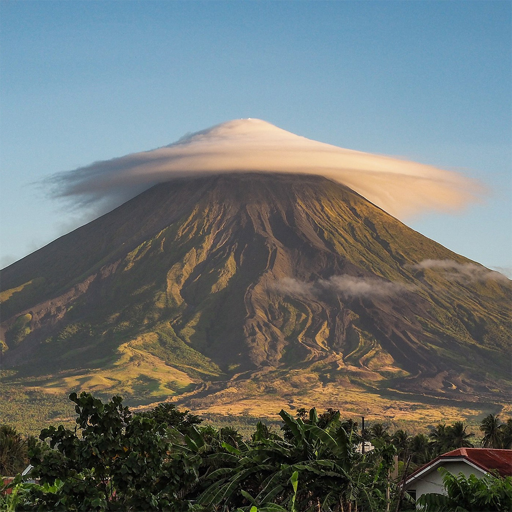
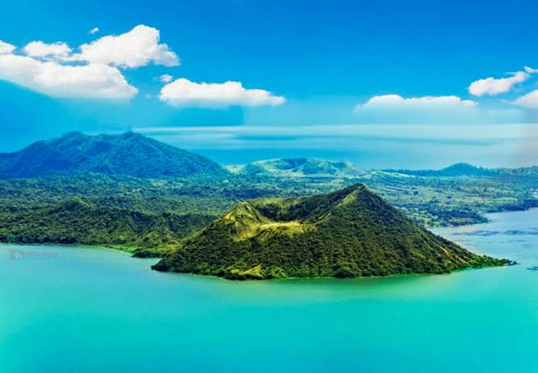
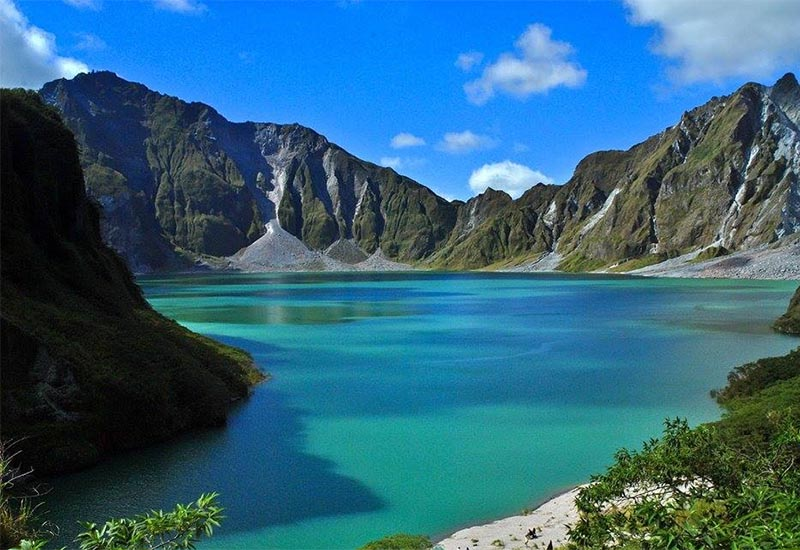
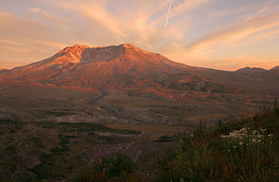

𝐅𝐀𝐌𝐎𝐔𝐒 𝐕𝐎𝐋𝐂𝐀𝐍𝐎𝐄𝐒

Mayon Volcano
Located in Albay, Bicol Region. World-renowned for its symmetric "perfect cone" shape.
Read full profile →
Taal Volcano
Located in Batangas. A complex volcano sitting inside Taal Lake with its own crater lake.
Read full profile →
Mount Pinatubo
Located in Zambales. Famous for its 1991 eruption and stunning turquoise crater lake.
Read full profile →
Mount St. Helens
Located in Skamania County, southwestern Washington state, in the United States.
Read full profile →